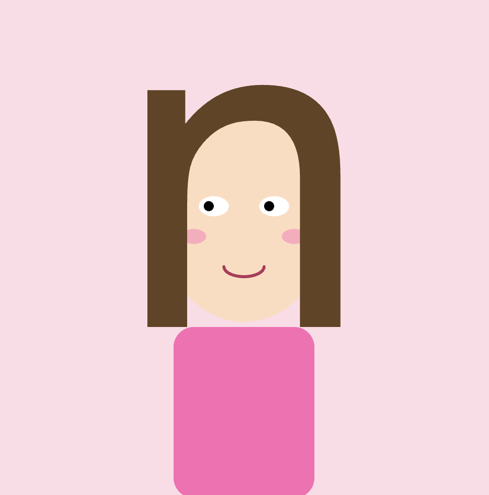
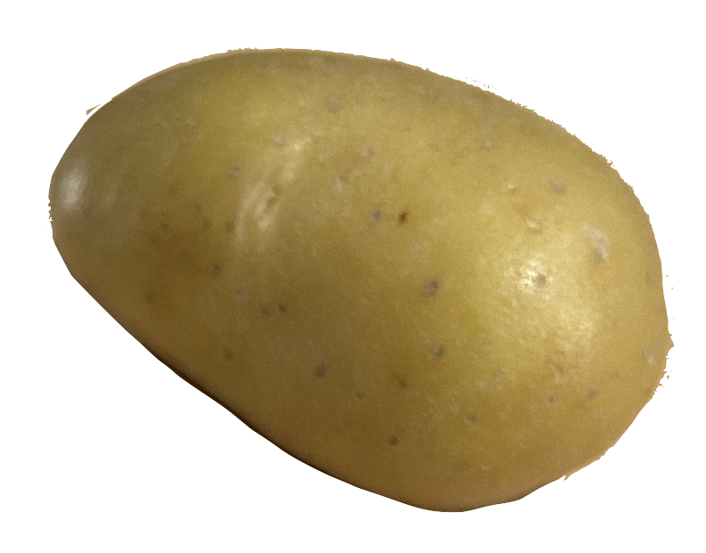
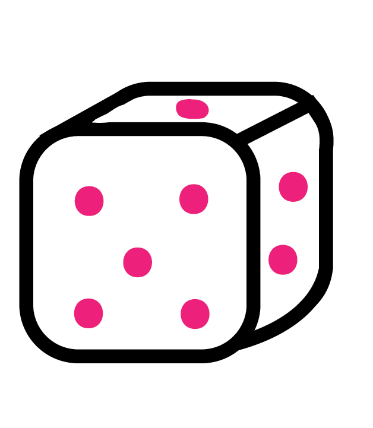
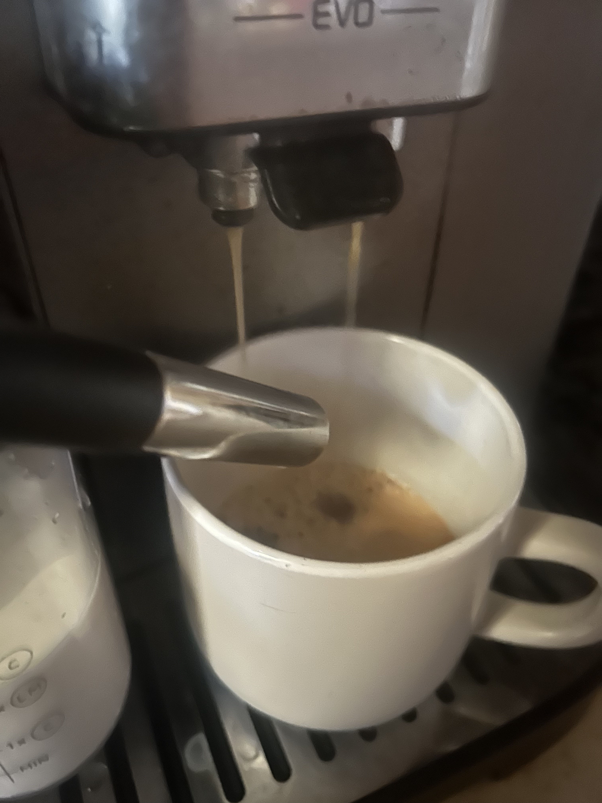
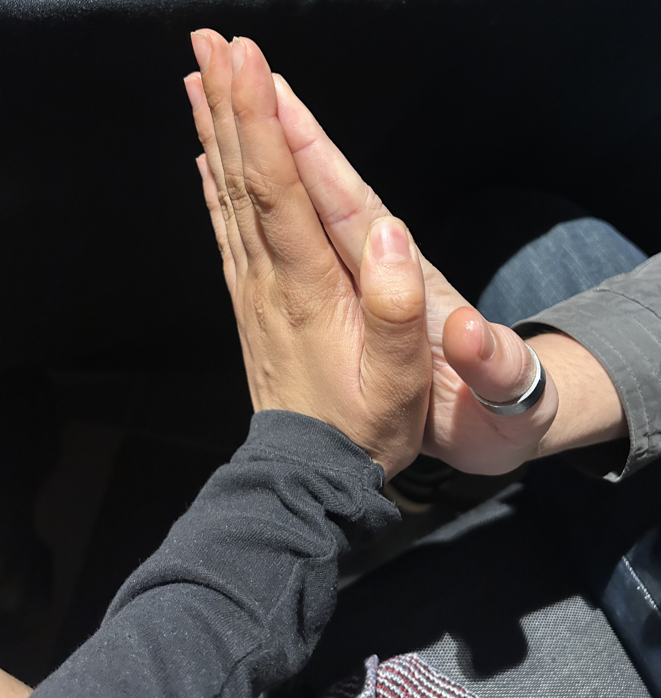
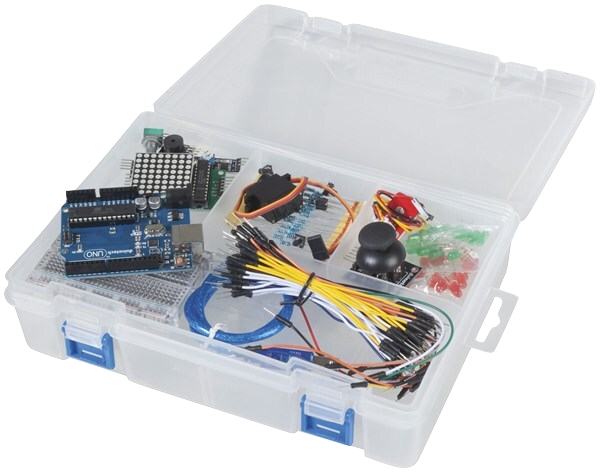
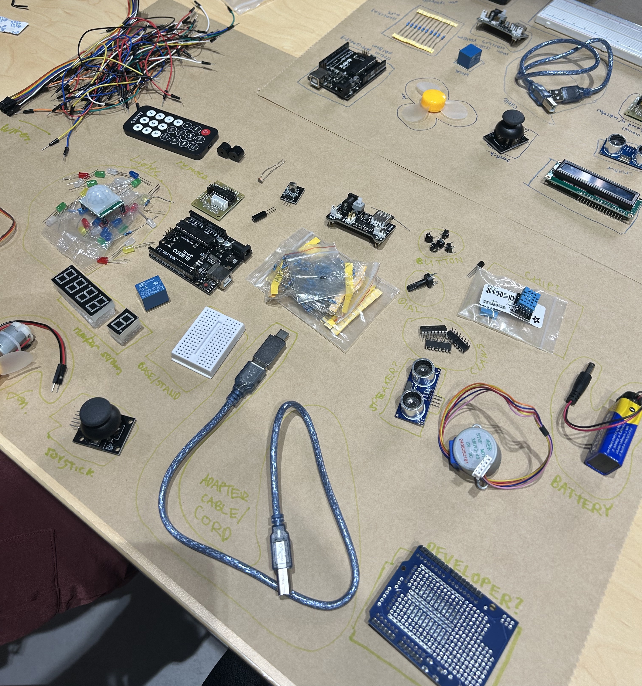
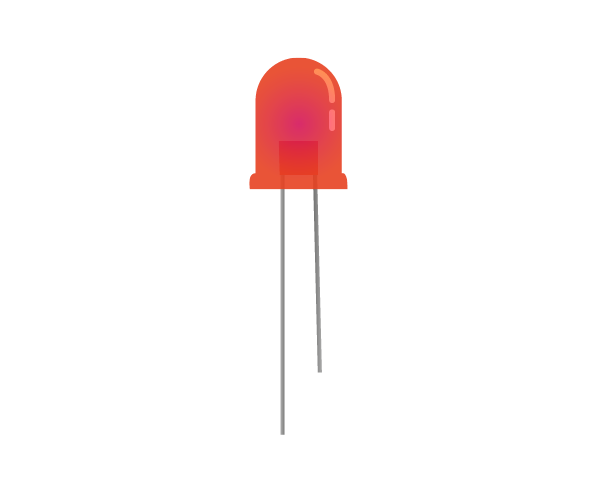
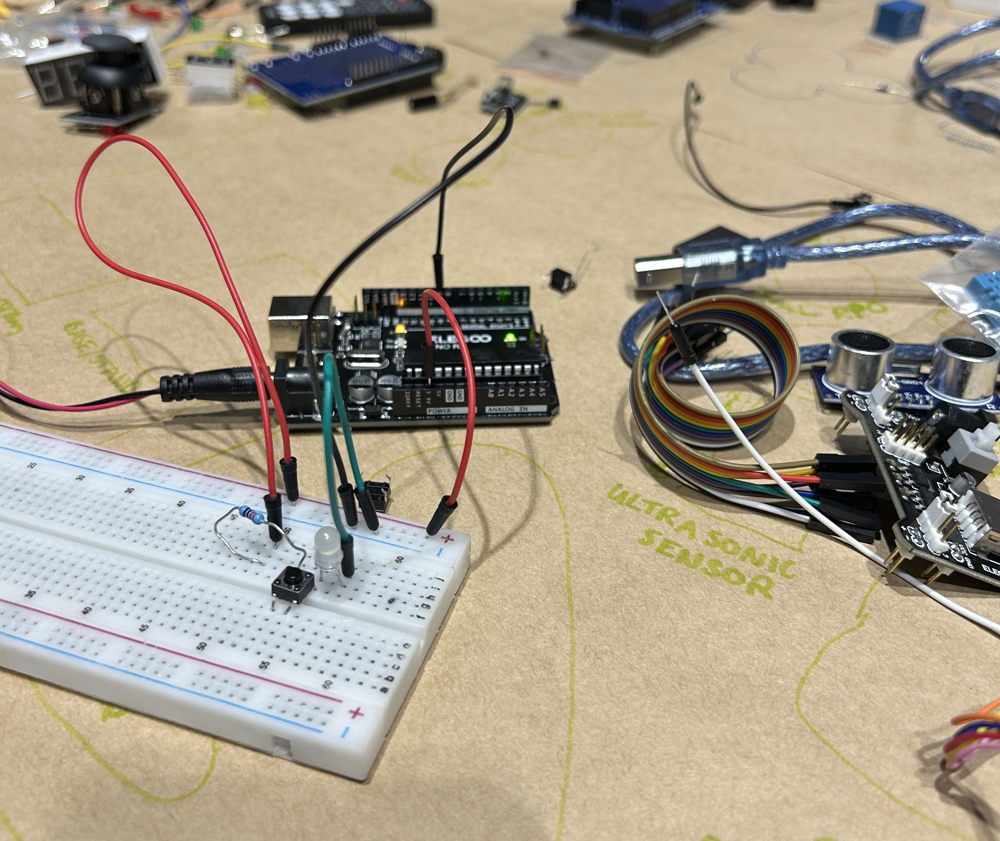
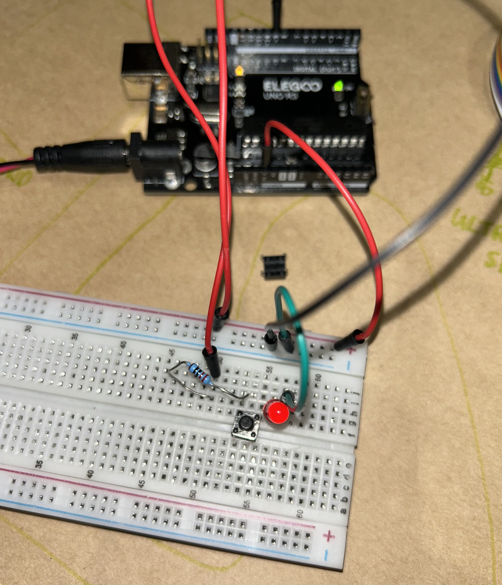

TTTTOUCH!
This workshop involved using an Arduino to hook up a speaker and wires into organic matter to produce sound.

learning p5.js introduced me to more examples and uses of creative coding! A part of exploration was playing with the web cam canvas capabilities and creating a self portrait using p5. I mostly usedthe p5 examples on the website to create this, with a function called Draw Eye that made the pupil of the eye move with the cursor. This code was sourced from https://editor.p5js.org/edwardjmartin/sketches/XbjbWuuKG


This workshop involved using an Arduino to hook up a speaker and wires into organic matter to produce sound.

Every hour dice roll:
1: Drink a beverage
2: Do 10 Star Jumps
3: Write down something you’re grateful for
4: High five someone
5: Do a one minute meditation
6: Paint a nail
Results:
Hour 1: Drink a beverage
Hour 2: Do 10 star jumps
Hour 3: Do 10 star jumps
Hour 4: High Five someone
Hour 5: Do a one minute meditation
Hour 6: Do 10 star jumps
Hour 7: Paint a nail
Hour 8: Drink a beverage
Hour 9: Write down something you’re grateful for
Hour 10: Drink a Beverage
Hour 11: Write down something you’re grateful for
Hour 12: Paint a nail



We learnt what each part of the Arduino kit did! This was very helpful and gave me a good idea of what kind of projects are possible with a Arduino.


initial learning workshop where I hooked up the arduino for the first time! I made the things blink and then I made it buzz.

